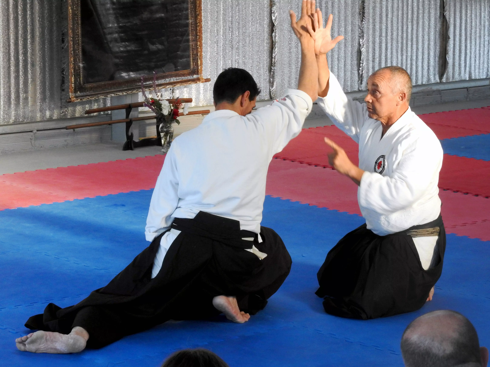

Juan Alberto Carrizo Sensei
El Sensei Juan Alberto Carrizo se interesó en la práctica de Artes Marciales a partir de una exhibición en el año 1980. Entonces comenzó a practicar Kung-Fu con el Sifu Miguel Ángel Pasin. Sensei Pasin fue quien había introducido el AIKIDO en la ciudad de Mar del Plata en el año 1976.
En el Año 1982 Sensei Carrizo comenzó con la práctica del AIKIDO con el mismo instructor y luego de tres años de practicar Kung-Fu, abandonó este arte para continuar exclusivamente con el camino del Aikido.

En el mes de Marzo del año 1991 viajo a Japón como Uchi -Deshi (discípulo autorizado) del Sensei Yasuo Kobayashi Shihan 8º DAN alumno directo de O' Sensei MORIHEI UESHIBA, donde durante el término de 3 meses se perfeccionó no solo en las técnicas de AIKIDO, sino que conoció las costumbres y filosofía japonesas, participando de clases impartidas por los maestros de HOMBU-DOJO (sede mundial del AIKIDO).
En el año 1992 se graduó como 1º DAN comenzando a dar clases en forma continua en el HIKARI- DOJO de ésta ciudad. En el año 1995 se graduó como 2º DAN y viajó a Japón en Septiembre del año 1996 por segunda vez asistiendo al 7mo Congreso Mundial de AIKIDO realizado en la ciudad de Katsuura, instruyéndose y participando de las clases dictadas por los mejores maestros del AIKIDO a nivel mundial. Al finalizar el mencionado congreso permaneció durante 60 días en la escuela del Sensei Kobayashi Shihan, continuando con la instrucción del AIKIDO. En el año 1998 se graduó como 3º DAN.
Cabe destacar que Sensei Carrizo en el transcurso de éstos años ha participado de seminarios jornadas en distintos países como: Brasil, Paraguay, Uruguay, Chile y también los organizados en Argentina, siendo instruido y dirigido desde el año 1992 por el hoy lamentablemente fallecido Sensei Kenzo Miyazawa Shihan, 7º DAN, quien fuera creador y Presidente de la Asociación Argentina de Aikido AIKIKAI, Director Técnico de la Federación Latinoamericana de Aikido-Miembro de la Federación Internacional de Aikido y presidente de la Federación Mercosur de Aikido.
El 1° de Mayo del 2005, Sensei Carrizo fundó la Asociación Marplatense de Aikido. En el año 2007 promovió a 4º DAN bajo la dirección de la Asociación Argentina de Aikido a cargo de los Sensei Ernesto Campos, Laura Copello y Rubén Sandoval.
En el año 2012, Sensei Carrizo ingresó como miembro al Aikido International Club (AIC) como uno de los instructores representantes de Argentina, dando seminarios internacionales en distintos países, en conjunto con otros maestros pertenecientes a dicho Club. Actualmente es miembro y representante de la Asociación Argentina de Aikido en dicha asociación Internacional.
En el mes de septiembre del año 2016, Sensei Carrizo viajó con un grupo de alumnos a Japón para participar del 12° Congreso de la International Aikido Federation, como representante de Mar del Plata y Argentina y, al siguiente año, le fue concedida la graduación de 5° DAN.
En el año 2019, Sensei Carrizo estuvo presente y participó en carácter de representante de la Asociación Argentina de Aikido de la reunión en la que se fundó la ULAIAF (Unión Latinoamericana de Aikido).
Ya en el año 2020, al comienzo de la pandemia, y viéndose imposibilitada la práctica presencial, fue un precursor en la realización de entrevistas virtuales y charlas temáticas (vía Zoom) con maestros nacionales y internacionales. La transmisión de sus experiencias, de principios, de saberes, de conocimiento y filosofía de este arte, es invaluable por su nivel alcanzado y con muchos años de camino recorrido. Este ciclo se prolongó durante el período en el que no se podían retomar las prácticas presenciales, a manera de seguir en el Do, en el camino.
Desde fines del año pasado, en función del contexto epidemiológico de nuestra ciudad, la Asociación Marplatense de Aikido ha retomado las clases presenciales, con protocolo, en su sede central ubicada en Mar del Plata.
Nuestra Asociación cuenta con un plantel de Instructores con graduaciones de 1º, 2º y 3° DAN, y numerosos alumnos (Kyus) de ambos sexos y de todas las edades (niños, adolescentes y adultos).